3.5.1. Основные понятия линейного криптоанализа
3.5.1. Основные понятия линейного криптоанализа
Линейный криптоанализ был впервые представлен на Eurocrypt'93 криптографом Mitsuro Matsui в работе «Linear Cryptanalysis Method for DES Cipher». Данный метод криптоанализа относится к атакам с известными открытыми текстами (known plaintext attack) и в этом отношении является менее требовательным, чем метод дифференциального криптоанализа, использующий специально сформированные (выбранные) открытые тексты.
Линейный криптоанализ − это метод криптоанализа блочных шифров, основанный на использовании линейных зависимостей между входными и выходными битами подстановок, и, соответственно, всего блочного шифра с участием бит ключа. В общем виде такие линейные выражения имеют вид 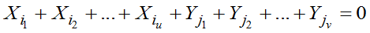. Выражения такого вида, содержащие случайно выбранные коэффициенты из всего возможного набора, должны иметь вероятность выполнения равную 0.5, т. е. выполняться и не выполняться в одинаковом количестве случаев для разных данных. На практике получается, что вероятности выполнения некоторых линейных выражений сильно отклоняются от 0.5. В предельных случаях, если вероятность выражения равна 1 (а отклонение 0.5), то оно становится полностью линейным, если вероятность равна 0 (отклонение -0.5), то выражение превращается в аффинное, т. е. содержащее 1, отклонение вероятности вычисляется как 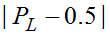. Чем больше отклонение линейного выражения от 0.5, тем лучше оно подходит для использования в линейном криптоанализе. Из линейных выражений отдельных раундов строится линейная модель всего шифра, позволяющая подобрать часть подключа последнего раунда отдельно от всех остальных частей.
В линейном криптоанализе, как и в дифференциальном криптоанализе, определяющую роль играют подстановки, так как для них строятся линейные выражения, которые потом связываются и распространяются на весь блочный шифр. Для выбора оптимальных линейных выражений используется таблица линейной аппроксимации подстановок, используемых в блочном шифре. Перед тем как переходить непосредственно к анализу таблицы линейной аппроксимации и выбору линейных выражений, необходимо рассмотреть каким образом из вероятностей отдельных линейных выражений можно получить вероятность линейной модели. Для этого рассмотрим предложенную Матсуи лемму «О набегании».
Пусть имеются две случайные двоичные переменные 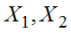, тогда уравнение 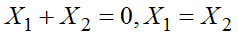 будет линейным отношением, а уравнение 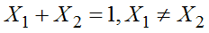 будет аффинным выражением. Предположим, что распределение вероятностей равно:
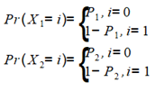.
Если две случайные переменные являются независимыми, тогда
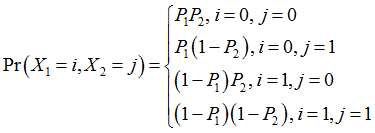.
Следовательно вероятность того, что 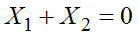 составит (сумма случаев 1 и 4):
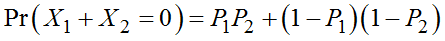.
Обозначим как 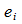 отклонение вероятности соответствующего линейного выражения от 0.5, тогда:
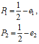
и получим в результате подстановки
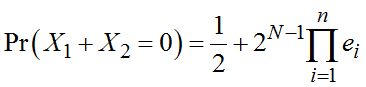.
Эти рассуждения могут быть расширены более чем на две двоичные переменные. Матсуи предложил следующую лемму, которая предполагает, что все n случайных двоичных переменных являются независимыми:
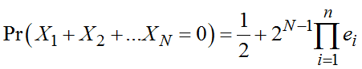
или, что эквивалентно 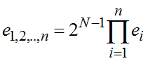 − это суммарное отклонение вероятности линейного выражения.
Таблица линейной аппроксимации и метод ее построения
Таблица линейной аппроксимации − это статистическая характеристика подстановки, в которой содержатся все линейные выражения для этой подстановки, и отклонение их вероятностей от 0.5. Для случайной подстановки, использованной ранее в дифференциальном криптоанализе и приведенной в табл. 3.9, таблица линейной аппроксимации приведена на рис. 3.37.
Таблица 3.9
Пример случайной подстановки размерностью 4 бита
0 |
1 |
2 |
3 |
4 |
5 |
6 |
7 |
8 |
9 |
A |
B |
C |
D |
E |
F |
0 |
6 |
7 |
9 |
B |
5 |
E |
4 |
A |
1 |
8 |
2 |
F |
C |
3 |
D |
Чем темнее ячейка в таблице, тем больше ее отклонение вероятности. Они вычисляется как значение в таблице, деленное на  , где n − размерность подстановки. Если значение ячейки в таблице равно нулю (т. е. отклонение линейного выражения равно нулю), это значит, что ее использование в составе линейной модели невозможно.
, где n − размерность подстановки. Если значение ячейки в таблице равно нулю (т. е. отклонение линейного выражения равно нулю), это значит, что ее использование в составе линейной модели невозможно.
Строки этой таблицы являются масками, которые определяют, какие из входных бит участвуют в линейном выражении. Столбцы это маски, определяющие, какие выходные переменные участвуют в линейном выражении. Рассмотрим пример: возьмем строку 0Eh=1110 и столбец 0001h. Это будет соответствовать выражению (0eh, 01h) или 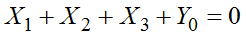, так как в строке используются переменные 1,2 и 3, а в столбце только переменную с индексом 0. Отклонение вероятности для этого выражения будет составлять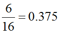 .
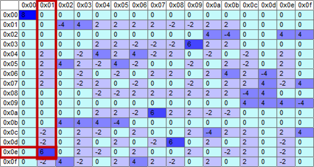 |
Рис. 3.37. Таблица линейной аппроксимации |
Для построения таблицы линейной аппроксимации в качестве исходных данных используется только подстановка. Для построения одной ячейки таблицы линейной аппроксимации сначала необходимо выбрать входную и выходную маску. После этого для каждого числа из набора всех возможных входов подстановки, т. е. чисел от 0 до  выполняется извлечение бит, соответствующих входной маске. Эти биты будут значениями переменных X в соответствующих каждому значению линейных выражениях. После этого все возможные значения (от 0 до 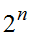 ) пропускаются через подстановку и из каждого числа результата извлекаются значения переменных Y. Далее, каждое выражение приравнивается к нулю и подсчитывается сколько из них выполняется, а сколько нет. Далее, из числа тех выражений, которые выполнились, вычитается число тех, которые не выполнились. Это и есть искомое значение в таблице. Иллюстрация этого метода приведена на рис. 3.38 для подстановки из табл. 3.10.
выполняется извлечение бит, соответствующих входной маске. Эти биты будут значениями переменных X в соответствующих каждому значению линейных выражениях. После этого все возможные значения (от 0 до 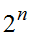 ) пропускаются через подстановку и из каждого числа результата извлекаются значения переменных Y. Далее, каждое выражение приравнивается к нулю и подсчитывается сколько из них выполняется, а сколько нет. Далее, из числа тех выражений, которые выполнились, вычитается число тех, которые не выполнились. Это и есть искомое значение в таблице. Иллюстрация этого метода приведена на рис. 3.38 для подстановки из табл. 3.10.
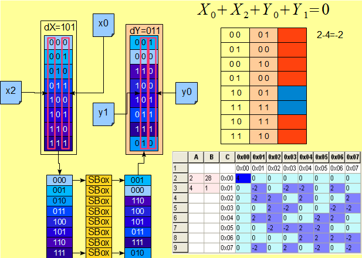 |
Рис. 3.38. Схематичное изображение процесса заполнения ячеек таблицы линейной аппроксимации |
Таблица 3.10 |
|||||||
Пример подстановки размерности 3 бита |
|||||||
0 |
1 |
2 |
3 |
4 |
5 |
6 |
7 |
1 |
0 |
6 |
4 |
5 |
3 |
7 |
2 |
В качестве входной маски было выбрано 05, выходной 03. Получившееся линейное выражение приведено в верхней правой части, таблица линейной аппроксимации приведена в нижней правой части рис. 3.38. Синим цветом в таблице, под линейным выражением, выделены выражения, которые оказались верными, красным те, которые оказались неверными.
Для построения линейной модели всего шифра используют подстановки, выбираемые с помощью двух критериев, таких же, как и в дифференциальном криптоанализе. Первый из них предписывает отдавать предпочтение при выборе линейным выражениям с максимальным отклонением вероятности от 0.5. Подходят отклонения как в сторону 1, так и в сторону нуля. Второй критерий состоит в том, что для использования рекомендуется выбирать линейные выражения с минимальным весом Хэмминга выходных переменных. После выбора первого линейного выражения последующие выбираются так, чтобы они были связаны от одного раунда к другому, и выходы предыдущего раунда, после линейного преобразования, попадали на входы последующего. В результате получается линейная модель всего блочного шифра, состоящая из множества связанных линейных выражений. Рассмотрим пример составления линейной модели алгоритма шифрования, приведенный на рис. 3.39.
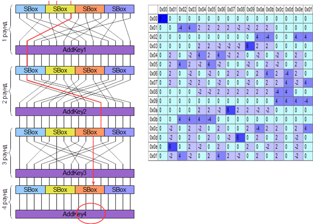 |
Рис. 3.39. Пример составления линейной модели алгоритма шифрования |
В этом примере используется учебный алгоритм шифрования и подстановка из подраздела 2.4.2. Тестовый шифр состоит из 4 раундов, в нем используются одинаковые подстановки размером 4 бита в качестве нелинейного преобразования, перестановка бит в качестве линейного преобразования и добавление подключа с помощью операции сложения по модулю 2. В первом раунде выбираем линейное выражение (0Eh,01), на втором (04, 04), на третьем (01, 02). Это соответствует линейному выражению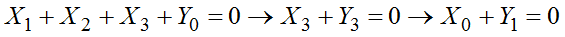 . Исходя из этого, линейной моделью всего шифра будет (0Eh, 02) или 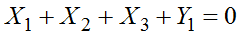, где переменные − это входы и выходы алгоритма шифрования. Эта модель должна иметь отклонение вероятности равное
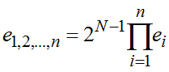 = 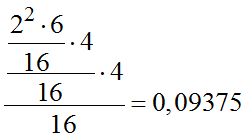.
Использование этой модели и данных вида «известный открытый текст ‹‹шифртекст›› позволяет найти часть подключа, обозначенную на рис. 3.39 красным овалом.